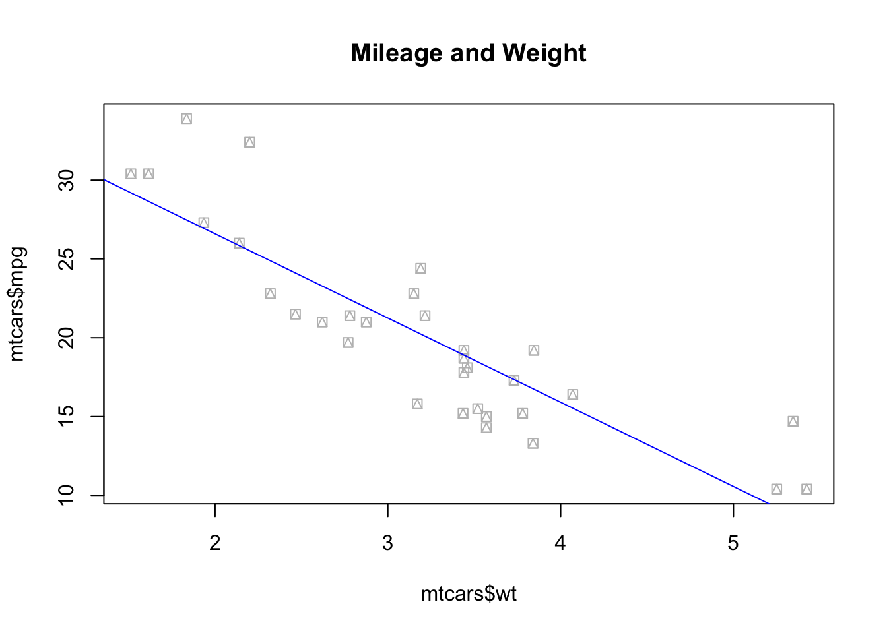

Machine learning for policy analysis
At its core, machine learning is primarily interested in making sense of complex data. A machine learning algorithm’s job is to read data and identify patterns that can be used for: prediction, feature-relevance detection, model-free classification, among other actions.
Got any questions or thoughts you want to share? Go to our blog-style discussion board and leave a comment underneath the post dedicated to the introduction tab of this site.
A general introduction
Machine Learning for Public Policy:
Empirical Public Policy research is primarily concerned with causality and understanding counterfactuals. What is the impact of Policy or Programme X on Population Outcome Y? What would have happened in the absence of such a policy? However, there are policy problems that may be solved without necessarily looking for a causal link. We call these `prediction policy problems’ (Kleinberg et al. 2015). Some examples include:
Allocating fire and health inspectors in cities (Glaeser et al. 2016).
Predicting unemployment spell length to help workers decide on savings rates and job search strategies.
Predicting highest risk youth for targeting interventions (Chandler,Levitt, and List 2011).
How does a Machine Learn?
Machine learning is classified in three major branches:
Supervised Learning:
This course will be primarily concerned with supervised learning. Supervised learning is analogous to statistical learning: suppose that we observe a quantitative response \(Y\) and \(p\) predictors, \(X_1, X_2,..., X_p\).
We can rewrite this in a general linear form as:
\[Y = f(X) + u\] where \(u\) is an error term.
Unsupervised Learning:
Unsupervised learning is known for reading data without labels; it is more computationally complex than supervised learning (because it will look for all possible patterns in the data), but it is also more flexible than supervised learning. You can think of clustering, anomaly detection, neural networks, etc.
Reinforcement Learning:
Reinforcement learning is categorised as Artificial Intelligence. It is more focused on goal-directed learning from interaction than are other approaches to machine learning. As per Sutton and Barto (2015), the three most distinguishing features of reinforcement learning are:
Being closed-loop; i.e. the learning system’s actions influence its later inputs.
Does not have direct instructions as to what actions to take; instead it must discover which actions yield the most reward by trying them out.
Not knowing where the consequences of actions, including reward signals, play out over extended time periods.
Relevant trade-offs in Machine Learning
Flexibility vs. interpretability: not all found patterns are directly interpretable.
Prediction vs. inference: high predictive power does not allow for proper inference.
Goodness-of-fit vs. over-fitting: how do we know when the fit is good?
An introduction to R programming
For the purposes of this course, we will be working with the integrated development environment (IDE) Rstudio. Make sure you have downloaded it and have familiarised yourself with the interface before proceeding.
Features of R
R is a statistical programming language. As such, it understands and categorises its input as data types:
(Note that R is not too strict about data types, but you need to be able to identify them to use them in math operations.)
Exammples of data types:
# Numeric (or double):
numeric_vector <- c(1, 1.0, 65.5)
print(numeric_vector)## [1] 1.0 1.0 65.5#Integers:
integer_vector <- c(1L, 3L, 45L)
print(integer_vector)## [1] 1 3 45#Logical (or boolean):
boolean_vector <- c(TRUE, FALSE)
print(boolean_vector)## [1] TRUE FALSE#Character:
character_vector <- c("Harry Potter", "Star Wars", "Lord of the Rings")
print(character_vector)## [1] "Harry Potter" "Star Wars" "Lord of the Rings"#Factor: (also knows as categorical variables)
factor_vector <- as.factor(c("male","female"))
print(factor_vector)## [1] male female
## Levels: female male#Missing:
NA## [1] NA… and data structures. A data structure is either homogeneous (all elements are of the same data type) or heterogeneous (elements can be of more than one data type).
Examples of data structures:
Vectors: think of a row, or a column of the same element.
#Vectors:
x <- c(1L,3L,5L,7L,9L) # we call this an integer vector
y <- c(1.3, 1, 5, 7, 11.2) # we call this a numerical (or double) vector
print(x)## [1] 1 3 5 7 9print(y)## [1] 1.3 1.0 5.0 7.0 11.2Matrices: they have rows and columns containing elements of the same type.
#Matrices:
A <- matrix(1:9, ncol=3, nrow=3, byrow= TRUE)
print(A)## [,1] [,2] [,3]
## [1,] 1 2 3
## [2,] 4 5 6
## [3,] 7 8 9Arrays: A vector is a one-dimensional array. A matrix is a two-dimensional array. In short, an array is a collection of data of the same type.
#Arrays:
n <- 5*5*3
B <- array(1:n, c(5,5,3))
print(B)## , , 1
##
## [,1] [,2] [,3] [,4] [,5]
## [1,] 1 6 11 16 21
## [2,] 2 7 12 17 22
## [3,] 3 8 13 18 23
## [4,] 4 9 14 19 24
## [5,] 5 10 15 20 25
##
## , , 2
##
## [,1] [,2] [,3] [,4] [,5]
## [1,] 26 31 36 41 46
## [2,] 27 32 37 42 47
## [3,] 28 33 38 43 48
## [4,] 29 34 39 44 49
## [5,] 30 35 40 45 50
##
## , , 3
##
## [,1] [,2] [,3] [,4] [,5]
## [1,] 51 56 61 66 71
## [2,] 52 57 62 67 72
## [3,] 53 58 63 68 73
## [4,] 54 59 64 69 74
## [5,] 55 60 65 70 75Lists: a list is a one-dimensional, heterogeneous data structure. Basically, it is an object that stores all object types.
my_list <- list(42, "The answer is", TRUE)
print(my_list)## [[1]]
## [1] 42
##
## [[2]]
## [1] "The answer is"
##
## [[3]]
## [1] TRUEData frames: a data frame is a list of column vectors. Each vector must contain the same data type, but the different vectors can store different data types. Note, however, that in a data frame all vectors must have the same length.
a <- 1L:5L
class(a)## [1] "integer"b <- c("a1", "b2", "c3", "d4", "e5")
class(b)## [1] "character"c <- c(TRUE, TRUE, FALSE, TRUE, FALSE)
class(c)## [1] "logical"df <- as.data.frame(cbind(a,b,c))
str(df)## 'data.frame': 5 obs. of 3 variables:
## $ a: chr "1" "2" "3" "4" ...
## $ b: chr "a1" "b2" "c3" "d4" ...
## $ c: chr "TRUE" "TRUE" "FALSE" "TRUE" ...Notice that even though vector a in dataframe df is of class integer, vector b is of class character, and vector ^c is of class boolean/logical, when binding them together they have been coerced into factors. You’ll have to manually transform them into their original class to be able to use them in math operations.
df$a <- as.integer(df$a)
df$b <- as.character(df$b)
df$c <- as.logical(df$c)
str(df)## 'data.frame': 5 obs. of 3 variables:
## $ a: int 1 2 3 4 5
## $ b: chr "a1" "b2" "c3" "d4" ...
## $ c: logi TRUE TRUE FALSE TRUE FALSEFrom here on, we will write an R script together, and learn some basic commands and tools that will allow you to explore and manipulate data. Please note that this is not an exhaustive tutorial. It is nonetheless a good place to start.
1. Setting up the Rstudio working environment
It is good practice to make sure that the working environment is empty/clean before you start running any code.
# The r base command rm() stands for remove
rm(list = ls()) # this line indicates R to clear absolutely everything from the environmentOnce that has been taken care of, you need to load the libraries you will be working with. While r base has a large number of commands to explore, wrangle, and manipulate data, the open source feature of R means that people all over the world are constantly working on packages and functions to make our lives easier. These can be used by calling the libraries in which they are stored:
# My personal favourite are the Tidyverse library, by Hadley Whickam, and data.table. Both are brilliant for data exploration, manipulation, and visualisation.
library(tidyverse)
library(data.table)If you’re working with an imported data set, you should probably set up your working directory as well:
setwd("~/Desktop/") #Note that the squiggly symbol is a shortcut for Mac users, if you're a Windows user, please write the whole path.From the working directory, you can call documents: .csv files, .xls and .xlsx, images, .txt, .dta (yes, STATA files!), and more. You’ll need to use the right libraries to do so. For instance: readxl (from the Tidyverse) uses the function read_excel() to import .xlsx and .xls files. If you want to export a data frame in .xlsx format, you can use the package write_xlsx().
2. R base commands for data set exploration
Now that we have all the basic stuff set up, let’s start with some basic r base commands that will allow us to explore our data. To do so, we will work with the toy data set mtcars that can be called from R without the need to upload data or call data from a website.
# some basics to explore your data
str(mtcars) # show the structure of the object in a compact format## 'data.frame': 32 obs. of 11 variables:
## $ mpg : num 21 21 22.8 21.4 18.7 18.1 14.3 24.4 22.8 19.2 ...
## $ cyl : num 6 6 4 6 8 6 8 4 4 6 ...
## $ disp: num 160 160 108 258 360 ...
## $ hp : num 110 110 93 110 175 105 245 62 95 123 ...
## $ drat: num 3.9 3.9 3.85 3.08 3.15 2.76 3.21 3.69 3.92 3.92 ...
## $ wt : num 2.62 2.88 2.32 3.21 3.44 ...
## $ qsec: num 16.5 17 18.6 19.4 17 ...
## $ vs : num 0 0 1 1 0 1 0 1 1 1 ...
## $ am : num 1 1 1 0 0 0 0 0 0 0 ...
## $ gear: num 4 4 4 3 3 3 3 4 4 4 ...
## $ carb: num 4 4 1 1 2 1 4 2 2 4 ...dim(mtcars) # inspect the dimension of the dataset (returns #rows, #columns)## [1] 32 11class(mtcars) # evaluate the class of the object (e.g. numeric, factor, character...)## [1] "data.frame"View(mtcars$mpg) # Try to avoid running this one in big and complex databases.
length(mtcars$mpg) # evaluate the number of elements in vector mpg## [1] 32mean(mtcars$mpg) # mean of all elements in vector mpg## [1] 20.09062sum(mtcars$mpg) # sum of all elements in vector mpg (similar to a column sum)## [1] 642.9sd(mtcars$mpg) # standard deviation## [1] 6.026948median(mtcars$mpg) # median## [1] 19.2cor(mtcars$mpg, mtcars$wt) # default is pearson correlation, specify method within function to change it. ## [1] -0.8676594table(mtcars$am) #categorical data in a table: counts##
## 0 1
## 19 13prop.table(table(mtcars$am)) #categorical data in a table: proportions##
## 0 1
## 0.59375 0.406253. Objects and assignments
Another important feature of the R programming language is that it is object oriented. For the most part, for every function used, there must be an object assigned! Let’s see an example of object assignment with a bivariate linear regression model:
ols_model <- lm(mpg ~ wt, data = mtcars) # lm stands for linear model. In parenthesis, dependent variable first, independent variable after the squiggly.
summary(ols_model)##
## Call:
## lm(formula = mpg ~ wt, data = mtcars)
##
## Residuals:
## Min 1Q Median 3Q Max
## -4.5432 -2.3647 -0.1252 1.4096 6.8727
##
## Coefficients:
## Estimate Std. Error t value Pr(>|t|)
## (Intercept) 37.2851 1.8776 19.858 < 2e-16 ***
## wt -5.3445 0.5591 -9.559 1.29e-10 ***
## ---
## Signif. codes: 0 '***' 0.001 '**' 0.01 '*' 0.05 '.' 0.1 ' ' 1
##
## Residual standard error: 3.046 on 30 degrees of freedom
## Multiple R-squared: 0.7528, Adjusted R-squared: 0.7446
## F-statistic: 91.38 on 1 and 30 DF, p-value: 1.294e-10If you would like to see the results from your regression, you do not need to run it again. Instead, you print the object (ols_model) you have assigned for the linear model function. Similarly, you can call information stored in that object at any time, for example, the estimated coefficients:
ols_model$coefficients## (Intercept) wt
## 37.285126 -5.344472If you want to read more about object oriented programming in R, check out Hadley Whickam’s site
4. Plotting with and without special libraries
We had previously loaded a couple of libraries. Why did we do that if we’ve only used r base commands so far? We’re going to exemplify the power of libraries by drawing plots using r base, and ggplot2. Ggplot2 is the plotting function from the Tidyverse, and arguably one of the best data visualisation tools across programming languages. If you’d like to read more about why that is the case, check out the Grammar of Graphics site.
Plotting with R base
plot(mtcars$wt, mtcars$mpg, pch = 14, col = "grey", main ="Mileage and Weight")
abline(ols_model, col ="blue") # Note that to add a line of best fit, we had to call our previously estimate linear model, stored in the ols_model object-
# with base R, you cannot directly assign an object to a plot, you need to use...
p_rbase <- recordPlot()
# plot.new() # don't forget to clean up your device afterwards!Plotting with ggplot2, using the grammar of graphics
# Steps in the Grammar of Graphics
# 1: linking plot to dataset,
# 2: defining (aes)thetic mapping,
# 3: use (geom)etric objects such as points, bars, etc. as markers,
# 4: the plot has layers
p_ggplot <- ggplot(data = mtcars, aes(x = wt, y = mpg, col=am )) + #the color is defined by car type (automatic 0 or manual 1)
geom_smooth(method = "lm", col= "orange") + # no need to run a regression ex-ante to add a line of best fit
geom_point(alpha=0.5) + #alpha controls transparency of the geom (a.k.a. data point)
theme(legend.position="none") #removing legend
print(p_ggplot)## `geom_smooth()` using formula = 'y ~ x'
Thanks to the grammar of graphics, we can continue to edit the plot after we have finished it. Perhaps we’ve come up with ideas to make it more stylish? Or helpful? Let’s see an example:
p_ggplot <- p_ggplot + theme(legend.position = "right") # I am saving it with the same name again, but I could easily choose another name and keep two versions of the plot.
print(p_ggplot) # the legend we just added is NOT helpful. Why is that? ## `geom_smooth()` using formula = 'y ~ x'# Remember when we talked about data types?!
class(mtcars$am) #for legends, we might prefer levels/categories ## [1] "numeric"mtcars$am <- as.factor(mtcars$am) # we have now transformed the numeric am into a factor variable
#the importance of assigning objects :)
# Now we can plot our scatterplot without issues
p_ggplot <- ggplot(data = mtcars, aes(x = wt, y = mpg, col = am )) +
geom_smooth(method = "lm", col= "red") +
geom_point(alpha=0.5) +
theme(legend.position="right") +
theme_classic()
print(p_ggplot)## `geom_smooth()` using formula = 'y ~ x'
# Shall we continue?
p_ggplot <- p_ggplot + ggtitle("Scatterplot of mileage vs weight of car") +
xlab("Weight of car") + ylab("Miles per gallon") +
theme(plot.title = element_text(color="black", size=14, face="bold", hjust = 0.5))
p_ggplot <- p_ggplot + scale_colour_manual(name = "Automatic or Manual",
labels = c("0.Automatic", "1.Manual"),
values = c("darkorange2", "darkgoldenrod1"))
print(p_ggplot)## `geom_smooth()` using formula = 'y ~ x'# Finally, perhaps we want two lines of best fit that follow the shape of the value dispersion by car type, and not the linear model function?
p <- ggplot(data = mtcars, aes(x = wt, y = mpg, col = am )) +
geom_smooth() +
geom_point(alpha=0.5) +
theme(legend.position="right") +
theme_classic() + ggtitle("Scatterplot of mileage vs weight of car") +
xlab("Weight of car") + ylab("Miles per gallon") +
theme(plot.title = element_text(color="black", size=14, face="bold", hjust = 0.5)) +
scale_colour_manual(name = "Automatic or Manual",
labels = c("0.Automatic", "1.Manual"),
values = c("darkorange2", "darkgoldenrod1"))
print(p)## `geom_smooth()` using method = 'loess' and formula = 'y ~ x'5. R base capabilities and reserved names
We’ve had some fun, now let’s go back to some r base basics. These are going to be relevant for making algorithms of your own:
Arithmetic and other operations
2+2 #addition## [1] 45-2 #subtraction## [1] 333.3/2 #division## [1] 16.655^2 #exponentiation## [1] 25200 %/% 60 #integer division [or, how many full hours in 200 minutes?]/aka quotient## [1] 3200 %% 60 #remainder [or, how many minutes are left over? ]## [1] 20Logical operators
34 < 35 #smaller than## [1] TRUE34 < 35 | 33 #smaller than OR than (returns true if it is smaller than any one of them)## [1] TRUE34 > 35 & 33 #bigger than AND than (returns true only if both conditions apply)## [1] FALSE34 != 34 #negation## [1] FALSE34 %in% 1:100 #value matching (is the object contained in the list of items?)## [1] TRUE`%ni%` <- Negate(`%in%`) #let's create a function for NOT IN
1001 %ni% 1:100 # home-made function! :)## [1] TRUE34==34 #evaluation## [1] TRUEIndexing
The tidyverse comes with a cool Starwars dataframe (or tibble, in the tidyverse language). As long as you have loaded the tidyverse library, you can use it.
head(starwars) # print the first 5 elements of the dataframe/tibble## # A tibble: 6 × 14
## name height mass hair_color skin_color eye_color birth_year sex gender
## <chr> <int> <dbl> <chr> <chr> <chr> <dbl> <chr> <chr>
## 1 Luke Sky… 172 77 blond fair blue 19 male mascu…
## 2 C-3PO 167 75 <NA> gold yellow 112 none mascu…
## 3 R2-D2 96 32 <NA> white, bl… red 33 none mascu…
## 4 Darth Va… 202 136 none white yellow 41.9 male mascu…
## 5 Leia Org… 150 49 brown light brown 19 fema… femin…
## 6 Owen Lars 178 120 brown, gr… light blue 52 male mascu…
## # ℹ 5 more variables: homeworld <chr>, species <chr>, films <list>,
## # vehicles <list>, starships <list>starwars$name[1] #indexing: extract the first element in the "name" vector from the starwars dataframe## [1] "Luke Skywalker"starwars[1,1] #alternative indexing: extract the element of row 1, col 1## # A tibble: 1 × 1
## name
## <chr>
## 1 Luke Skywalkerstarwars$name[2:4] # elements 2, 3, 4 of "name" vector## [1] "C-3PO" "R2-D2" "Darth Vader"starwars[,1] #extract all elements from column 1## # A tibble: 87 × 1
## name
## <chr>
## 1 Luke Skywalker
## 2 C-3PO
## 3 R2-D2
## 4 Darth Vader
## 5 Leia Organa
## 6 Owen Lars
## 7 Beru Whitesun lars
## 8 R5-D4
## 9 Biggs Darklighter
## 10 Obi-Wan Kenobi
## # ℹ 77 more rowsstarwars[1,] #extract all elements from row 1## # A tibble: 1 × 14
## name height mass hair_color skin_color eye_color birth_year sex gender
## <chr> <int> <dbl> <chr> <chr> <chr> <dbl> <chr> <chr>
## 1 Luke Sky… 172 77 blond fair blue 19 male mascu…
## # ℹ 5 more variables: homeworld <chr>, species <chr>, films <list>,
## # vehicles <list>, starships <list>starwars$height[starwars$height<150] # returns a logical vector TRUE for elements >150 in height vector## [1] 96 97 66 NA 88 137 112 94 122 79 96 NA NA NA NA NAstarwars[c('height', 'name')] #returns c(oncatenated) vectors## # A tibble: 87 × 2
## height name
## <int> <chr>
## 1 172 Luke Skywalker
## 2 167 C-3PO
## 3 96 R2-D2
## 4 202 Darth Vader
## 5 150 Leia Organa
## 6 178 Owen Lars
## 7 165 Beru Whitesun lars
## 8 97 R5-D4
## 9 183 Biggs Darklighter
## 10 182 Obi-Wan Kenobi
## # ℹ 77 more rowsWe are now reaching the end of this brief introduction to R and Rstudio. We will not go into the fun stuff you can do with data.table, you can find that out on your own if you need to (but know it is a powerful data wrangling package), and instead we will finalise with Reserved Names in R. These are names you cannot use for your objects, because they serve a programming purpose.
1. Not-observed data
# 1.1 NaN: results that cannot be reasonably defined
h <- 0/0
is.nan(h)## [1] TRUEclass(h)## [1] "numeric"print(h)## [1] NaN# 1.2 NA: missing data
colSums(is.na(starwars)) #How many missings in the starwars tibble*?## name height mass hair_color skin_color eye_color birth_year
## 0 6 28 5 0 0 44
## sex gender homeworld species films vehicles starships
## 4 4 10 4 0 0 0mean(starwars$height) # evaluation gives NA? Does that mean that the height vector is empty?!## [1] NAis.na(starwars$height) # logical vector returns 6 true statements for is.na (coincides with colSums table)## [1] FALSE FALSE FALSE FALSE FALSE FALSE FALSE FALSE FALSE FALSE FALSE FALSE
## [13] FALSE FALSE FALSE FALSE FALSE FALSE FALSE FALSE FALSE FALSE FALSE FALSE
## [25] FALSE FALSE FALSE TRUE FALSE FALSE FALSE FALSE FALSE FALSE FALSE FALSE
## [37] FALSE FALSE FALSE FALSE FALSE FALSE FALSE FALSE FALSE FALSE FALSE FALSE
## [49] FALSE FALSE FALSE FALSE FALSE FALSE FALSE FALSE FALSE FALSE FALSE FALSE
## [61] FALSE FALSE FALSE FALSE FALSE FALSE FALSE FALSE FALSE FALSE FALSE FALSE
## [73] FALSE FALSE FALSE FALSE FALSE FALSE FALSE FALSE FALSE TRUE TRUE TRUE
## [85] TRUE TRUE FALSEclass(starwars$height) # class evaluation returns integer...## [1] "integer"mean(as.integer(starwars$height), na.rm = TRUE) # read as integer, ignore NAs :) (rm stands for remove)## [1] 174.358# missing values (NA) are regarded by R as non comparables, even to themselves, so if you ever encounter a missing values in a vector, make sure tto explicitly tell the function you are using what to do with them.2. if, else, ifelse, function, for, print, length (etc…) These words are reserved for control flow and looping.
# if else statements
meanheight <- 174.358
if ( meanheight < 175) {
print('very tall!')
} else {
print('average height')
} ## [1] "very tall!"# a note on using if else: else should be on the same line as if, otherwise it is not recognised
# home-made functions
f1 <- function(x){
return(sum(x+1))
}
print(f1(5)) # returns value of x+1 when x = 5## [1] 6# for loops
class(starwars$height) # if it is not integer or numeric, then transform it! ## [1] "integer"starwars$height <- as.numeric(as.character(starwars$height)) # transforming the height vector to numeric
starwars$height_judge = NA # if you're using a new object within a for loop, make sure you initialize it before running it
for (i in 1:length(starwars$height)) {
starwars$height_judge[i] <- ifelse(starwars$height[i]<100, "Short", "Tall")
}
print(starwars[c("name", "height_judge", "height")])## # A tibble: 87 × 3
## name height_judge height
## <chr> <chr> <dbl>
## 1 Luke Skywalker Tall 172
## 2 C-3PO Tall 167
## 3 R2-D2 Short 96
## 4 Darth Vader Tall 202
## 5 Leia Organa Tall 150
## 6 Owen Lars Tall 178
## 7 Beru Whitesun lars Tall 165
## 8 R5-D4 Short 97
## 9 Biggs Darklighter Tall 183
## 10 Obi-Wan Kenobi Tall 182
## # ℹ 77 more rowsYou can download the R script by clicking on the button below.
An introduction to Python programming
If you would like to follow the course with Python, we will offer some guidance. Bear in mind that the R and Python scripts are not meant to be exact replicas of one another, this is because the languages offer different data wrangling packages. However, you’ll be able to get to the core of the course content.
With that said, let’s start with the first difference. Python does not have a standard IDE like Rstudio for R. You can choose to work directly with the console REPL, with Jupyter notebooks or the IDE Visual Studio Code. We recommend to use VSCode, because it offers many functionalities for code-sharing and collaboration, and you can integrate AI-helpers to guide you throughout your coding tasks.
Download VSCode and let’s get started!
When you open the IDE VSCode, you’ll receive a prompt to start a new project. Please make sure that when you do, you automatically save it in a dedicated folder. This will be relevant for many reasons, but the most pressing one is that you’ll want to create a Virtual Environment before starting your script.
| A Python Virtual Environment, also referred to as venv(s), is there to help us decouple and isolate package installs and manage them, independently from pkgs that are provided by the system or used by other projects. Although not strictly necessary, it is a good practice that will save us a few headaches in the future. |
To create a virtual environment, once you’ve opened a new blank project in VSC, click on shift + cmd + P (or F1) to open the Command Palette (it should display from the top of VSC). Type “Python” and select create python terminal. In the terminal, type `` python -m venv venv ’’ and that’s it! You’ll notice the appearance of a venv folder in your dedicated project folder.
Now, you’ll need to install and load the libraries you’ll need for your project. To install them, use the python terminal you have opened. It should be displayed in the bottom of the working environment. Use the following (which should work with both Windows and Macbook, although Mac users can also use the general brew installer):
`` pip install pkg_name ’’
# Now, we can load the libraries
import numpy as np # can be used to perform a wide variety of mathematical operations on arrays.
import pandas as pd # mainly used for data analysis and associated manipulation of tabular data in DataFrames
import matplotlib as mpl # comprehensive library for creating static, animated, and interactive visualizations in Python
import sklearn as sk # implement machine learning models and statistical modelling.With some basic libraries open, let’s start with a brief introduction to Python programming. Like R, it is object oriented programming. But we call its elements differently. Python uses the following list of elements:
- literals, variables, operators, delimiters, keywords, comments
# Assigning VARIABLES with LITERALS
an_integer = 4 # integer
a_float = 4.5 # numeric/float
a_boolean = False # boolean, true or false
a_string = "Number of literals:"
print(a_string , an_integer)## Number of literals: 4You’ll notice that what we call an object in R, is a variable in Python. Likewise, an element in R is now a literal in Python. We’ll stop with the comparisons and proceed to work with Python language for now.
In Python, the data type is derived from the literal and does not have to be described explicitly.
You can overwrite a variable (i.e. an object) with new information.
e.g.
an_integer = 7
print(an_integer)## 7If you’re working with a VSC script, you’ll want to select a snippet of the script and use shift + enter to only run that snippet (and not the whole code chunk).
Some basics:
Arithmetic operators
5 + 1 ## 65*3 ## 156 == 100 # returns FALSE## False6 != 100 # returns TRUE## True20 / 2## 10.02 ** 3 # 2 to the power of 3, ** is used for exponentiation## 8Keywords and comments
a_var = "This is a variable, which contains a string."
#and this is a comment about the string variable
print(a_var)
# lists: they are ordered arrays of elements, accesible via an index, e.g.
many_strings = ["Tolkien", "Orwell", "Austen"]
many_strings[0] # returns first element of list
# note that python starts counting from zero
many_strings.append("Mephistopheles")
print(many_strings) # we have succesfully appended an element to our list
many_strings.insert(2,"Shrek") # Insert element Shrek in position 3 of list (0,1,2)
print(many_strings)
# finally, sort the list...
many_strings.sort()
print(many_strings)
# python orders alphabetically :)
Let’s use a toy dataset from the sklearn package to practice some basic estimations.
# import sklearn dataset
from sklearn.datasets import load_diabetes
# load the dataset, assign it to an object
diabetes = load_diabetes()
print(diabetes.DESCR) # DESCR is a description option from sklearn library. Be mindful of the Note!## .. _diabetes_dataset:
##
## Diabetes dataset
## ----------------
##
## Ten baseline variables, age, sex, body mass index, average blood
## pressure, and six blood serum measurements were obtained for each of n =
## 442 diabetes patients, as well as the response of interest, a
## quantitative measure of disease progression one year after baseline.
##
## **Data Set Characteristics:**
##
## :Number of Instances: 442
##
## :Number of Attributes: First 10 columns are numeric predictive values
##
## :Target: Column 11 is a quantitative measure of disease progression one year after baseline
##
## :Attribute Information:
## - age age in years
## - sex
## - bmi body mass index
## - bp average blood pressure
## - s1 tc, total serum cholesterol
## - s2 ldl, low-density lipoproteins
## - s3 hdl, high-density lipoproteins
## - s4 tch, total cholesterol / HDL
## - s5 ltg, possibly log of serum triglycerides level
## - s6 glu, blood sugar level
##
## Note: Each of these 10 feature variables have been mean centered and scaled by the standard deviation times the square root of `n_samples` (i.e. the sum of squares of each column totals 1).
##
## Source URL:
## https://www4.stat.ncsu.edu/~boos/var.select/diabetes.html
##
## For more information see:
## Bradley Efron, Trevor Hastie, Iain Johnstone and Robert Tibshirani (2004) "Least Angle Regression," Annals of Statistics (with discussion), 407-499.
## (https://web.stanford.edu/~hastie/Papers/LARS/LeastAngle_2002.pdf)Whilst there are many things you can do directly with the sklearn package options, the pandas library is the best for dataframe manipulation.
# 1. convert the dataframe object into a pandas dataframe object
pandas_diabetes = pd.DataFrame(diabetes.data, columns=diabetes.feature_names)
# now we can use the handy describe() and info() options from pandas
pandas_diabetes.describe() # returns descriptive statistics of variables in dataframe (df)## age sex ... s5 s6
## count 4.420000e+02 4.420000e+02 ... 4.420000e+02 4.420000e+02
## mean -2.511817e-19 1.230790e-17 ... 9.293722e-17 1.130318e-17
## std 4.761905e-02 4.761905e-02 ... 4.761905e-02 4.761905e-02
## min -1.072256e-01 -4.464164e-02 ... -1.260971e-01 -1.377672e-01
## 25% -3.729927e-02 -4.464164e-02 ... -3.324559e-02 -3.317903e-02
## 50% 5.383060e-03 -4.464164e-02 ... -1.947171e-03 -1.077698e-03
## 75% 3.807591e-02 5.068012e-02 ... 3.243232e-02 2.791705e-02
## max 1.107267e-01 5.068012e-02 ... 1.335973e-01 1.356118e-01
##
## [8 rows x 10 columns]pandas_diabetes.info() # returns basic information about observations and variable names/types## <class 'pandas.core.frame.DataFrame'>
## RangeIndex: 442 entries, 0 to 441
## Data columns (total 10 columns):
## # Column Non-Null Count Dtype
## --- ------ -------------- -----
## 0 age 442 non-null float64
## 1 sex 442 non-null float64
## 2 bmi 442 non-null float64
## 3 bp 442 non-null float64
## 4 s1 442 non-null float64
## 5 s2 442 non-null float64
## 6 s3 442 non-null float64
## 7 s4 442 non-null float64
## 8 s5 442 non-null float64
## 9 s6 442 non-null float64
## dtypes: float64(10)
## memory usage: 34.7 KBlen(pandas_diabetes) # returns the length of the object (aka the number of observations in df)## 442pandas_diabetes.head() # print the first 4 observations of the variables (glimpse of your df)## age sex bmi ... s4 s5 s6
## 0 0.038076 0.050680 0.061696 ... -0.002592 0.019907 -0.017646
## 1 -0.001882 -0.044642 -0.051474 ... -0.039493 -0.068332 -0.092204
## 2 0.085299 0.050680 0.044451 ... -0.002592 0.002861 -0.025930
## 3 -0.089063 -0.044642 -0.011595 ... 0.034309 0.022688 -0.009362
## 4 0.005383 -0.044642 -0.036385 ... -0.002592 -0.031988 -0.046641
##
## [5 rows x 10 columns]If you’re working with VSC and you’d like to get a nice display of your data:
install the pkg ‘tabulate’ (pip install tabulate) using the terminal. You may have to open a new bash terminal (that is not using the Python REPL) to install packages. If that is the case (i.e. you could not pip install in the terminal you are using), you can ‘split’ the terminal using the interface split prompt.
# this prints the dataframe nicely (but remember to only print the head/first observations, otherwise you display a large table!)
print(pandas_diabetes.head().to_markdown())## | | age | sex | bmi | bp | s1 | s2 | s3 | s4 | s5 | s6 |
## |---:|------------:|-----------:|-----------:|------------:|------------:|-----------:|------------:|------------:|------------:|------------:|
## | 0 | 0.0380759 | 0.0506801 | 0.0616962 | 0.0218724 | -0.0442235 | -0.0348208 | -0.0434008 | -0.00259226 | 0.0199075 | -0.0176461 |
## | 1 | -0.00188202 | -0.0446416 | -0.0514741 | -0.0263275 | -0.00844872 | -0.0191633 | 0.0744116 | -0.0394934 | -0.0683315 | -0.092204 |
## | 2 | 0.0852989 | 0.0506801 | 0.0444512 | -0.00567042 | -0.0455995 | -0.0341945 | -0.0323559 | -0.00259226 | 0.00286131 | -0.0259303 |
## | 3 | -0.0890629 | -0.0446416 | -0.011595 | -0.0366561 | 0.0121906 | 0.0249906 | -0.0360376 | 0.0343089 | 0.0226877 | -0.00936191 |
## | 4 | 0.00538306 | -0.0446416 | -0.0363847 | 0.0218724 | 0.00393485 | 0.0155961 | 0.00814208 | -0.00259226 | -0.0319876 | -0.0466409 |Some basic operations and estimation of a linear model:
Indexig with pandas is done using the .iloc[] call. To estimate a linear model (OLS), you’ll need to split your data into a dependent Y and independent X variables.
| Luckily for us, because the diabetes toy dataframe is from the sklearn library, you can use the target and data functions. For the same reason, we will use the diabetes dataset and not the pandas-converted dataset. |
pandas_diabetes.iloc[:,1] # print first column: Name: sex, Length: 442, dtype: float64## 0 0.050680
## 1 -0.044642
## 2 0.050680
## 3 -0.044642
## 4 -0.044642
## ...
## 437 0.050680
## 438 0.050680
## 439 0.050680
## 440 -0.044642
## 441 -0.044642
## Name: sex, Length: 442, dtype: float64pandas_diabetes.iloc[:,1].mean() # get the mean of the first column: 1.2307902309192911e-17## 1.2307902309192911e-17# Linear Model (OLS), split data into dep Y and indep X variables
Y = diabetes.target # define targer/ Y var
X = diabetes.data # all remaining variables in the dataset are now X covariates
print(Y.shape, X.shape) # y is one column with 442 observations, X is 10 columns with 442 observations## (442,) (442, 10)print(Y) # prints all the vaues of Y## [151. 75. 141. 206. 135. 97. 138. 63. 110. 310. 101. 69. 179. 185.
## 118. 171. 166. 144. 97. 168. 68. 49. 68. 245. 184. 202. 137. 85.
## 131. 283. 129. 59. 341. 87. 65. 102. 265. 276. 252. 90. 100. 55.
## 61. 92. 259. 53. 190. 142. 75. 142. 155. 225. 59. 104. 182. 128.
## 52. 37. 170. 170. 61. 144. 52. 128. 71. 163. 150. 97. 160. 178.
## 48. 270. 202. 111. 85. 42. 170. 200. 252. 113. 143. 51. 52. 210.
## 65. 141. 55. 134. 42. 111. 98. 164. 48. 96. 90. 162. 150. 279.
## 92. 83. 128. 102. 302. 198. 95. 53. 134. 144. 232. 81. 104. 59.
## 246. 297. 258. 229. 275. 281. 179. 200. 200. 173. 180. 84. 121. 161.
## 99. 109. 115. 268. 274. 158. 107. 83. 103. 272. 85. 280. 336. 281.
## 118. 317. 235. 60. 174. 259. 178. 128. 96. 126. 288. 88. 292. 71.
## 197. 186. 25. 84. 96. 195. 53. 217. 172. 131. 214. 59. 70. 220.
## 268. 152. 47. 74. 295. 101. 151. 127. 237. 225. 81. 151. 107. 64.
## 138. 185. 265. 101. 137. 143. 141. 79. 292. 178. 91. 116. 86. 122.
## 72. 129. 142. 90. 158. 39. 196. 222. 277. 99. 196. 202. 155. 77.
## 191. 70. 73. 49. 65. 263. 248. 296. 214. 185. 78. 93. 252. 150.
## 77. 208. 77. 108. 160. 53. 220. 154. 259. 90. 246. 124. 67. 72.
## 257. 262. 275. 177. 71. 47. 187. 125. 78. 51. 258. 215. 303. 243.
## 91. 150. 310. 153. 346. 63. 89. 50. 39. 103. 308. 116. 145. 74.
## 45. 115. 264. 87. 202. 127. 182. 241. 66. 94. 283. 64. 102. 200.
## 265. 94. 230. 181. 156. 233. 60. 219. 80. 68. 332. 248. 84. 200.
## 55. 85. 89. 31. 129. 83. 275. 65. 198. 236. 253. 124. 44. 172.
## 114. 142. 109. 180. 144. 163. 147. 97. 220. 190. 109. 191. 122. 230.
## 242. 248. 249. 192. 131. 237. 78. 135. 244. 199. 270. 164. 72. 96.
## 306. 91. 214. 95. 216. 263. 178. 113. 200. 139. 139. 88. 148. 88.
## 243. 71. 77. 109. 272. 60. 54. 221. 90. 311. 281. 182. 321. 58.
## 262. 206. 233. 242. 123. 167. 63. 197. 71. 168. 140. 217. 121. 235.
## 245. 40. 52. 104. 132. 88. 69. 219. 72. 201. 110. 51. 277. 63.
## 118. 69. 273. 258. 43. 198. 242. 232. 175. 93. 168. 275. 293. 281.
## 72. 140. 189. 181. 209. 136. 261. 113. 131. 174. 257. 55. 84. 42.
## 146. 212. 233. 91. 111. 152. 120. 67. 310. 94. 183. 66. 173. 72.
## 49. 64. 48. 178. 104. 132. 220. 57.]To estimate a linear model, we’ll need t load the function from the sklearn library.
from sklearn.linear_model import LinearRegression
lm = LinearRegression(fit_intercept=True).fit(X, Y)
#print model coefficients using pandas
print(lm.coef_) # displayed in the order of the column names## [ -10.0098663 -239.81564367 519.84592005 324.3846455 -792.17563855
## 476.73902101 101.04326794 177.06323767 751.27369956 67.62669218]print(lm.intercept_) # model intercept = 152.133## 152.13348416289597# in a nicer way
column_names = pandas_diabetes.columns # to retrieve column names we should use the pandas dataset
coefficients = pd.concat([pd.DataFrame(column_names),pd.DataFrame(np.transpose(lm.coef_))], axis = 1)
print(coefficients) # displays variable name and it's estimated coefficient. ## 0 0
## 0 age -10.009866
## 1 sex -239.815644
## 2 bmi 519.845920
## 3 bp 324.384646
## 4 s1 -792.175639
## 5 s2 476.739021
## 6 s3 101.043268
## 7 s4 177.063238
## 8 s5 751.273700
## 9 s6 67.626692The sklearn library will be our trusted Machine Learning ally. However, for general statistical analysis and easier to interpret output, there are other libraries. E.g.
# an ever more intuitive output would look like this ->
# remember to pip install the libraries before importing them! And to do so in a different terminal (open a new bash terminal)
import statsmodels.api as sm
from scipy import stats
constant = sm.add_constant(X) # create a new X (covariate) object that includes all our variables and allow for this object to also display an estimated constant
est = sm.OLS(Y, constant) # estimate a linear regression model with dep Y and indep Xs (now constant)
lm_2 = est.fit() # create an object that contains all the models' parameters
print(lm_2.summary()) # print linear model parameters## OLS Regression Results
## ==============================================================================
## Dep. Variable: y R-squared: 0.518
## Model: OLS Adj. R-squared: 0.507
## Method: Least Squares F-statistic: 46.27
## Date: Tue, 28 Nov 2023 Prob (F-statistic): 3.83e-62
## Time: 16:11:21 Log-Likelihood: -2386.0
## No. Observations: 442 AIC: 4794.
## Df Residuals: 431 BIC: 4839.
## Df Model: 10
## Covariance Type: nonrobust
## ==============================================================================
## coef std err t P>|t| [0.025 0.975]
## ------------------------------------------------------------------------------
## const 152.1335 2.576 59.061 0.000 147.071 157.196
## x1 -10.0099 59.749 -0.168 0.867 -127.446 107.426
## x2 -239.8156 61.222 -3.917 0.000 -360.147 -119.484
## x3 519.8459 66.533 7.813 0.000 389.076 650.616
## x4 324.3846 65.422 4.958 0.000 195.799 452.970
## x5 -792.1756 416.680 -1.901 0.058 -1611.153 26.802
## x6 476.7390 339.030 1.406 0.160 -189.620 1143.098
## x7 101.0433 212.531 0.475 0.635 -316.684 518.770
## x8 177.0632 161.476 1.097 0.273 -140.315 494.441
## x9 751.2737 171.900 4.370 0.000 413.407 1089.140
## x10 67.6267 65.984 1.025 0.306 -62.064 197.318
## ==============================================================================
## Omnibus: 1.506 Durbin-Watson: 2.029
## Prob(Omnibus): 0.471 Jarque-Bera (JB): 1.404
## Skew: 0.017 Prob(JB): 0.496
## Kurtosis: 2.726 Cond. No. 227.
## ==============================================================================
##
## Notes:
## [1] Standard Errors assume that the covariance matrix of the errors is correctly specified.This displayed output contains all the information we may need to interpret the suitability of our linear model.
We’re at the end of this brief intro to Python. Notice that there’s a forward structure throughout. We create an object X, which we define to be of class, say, pandas. It’s class will let us use that class/library’s functions by calling them after a dot: X.summary() will display a summary of the X object. ** Visualisation with matplotlib **
import matplotlib.pyplot as plt
pandas_diabetes.head() # to remember our variables## age sex bmi ... s4 s5 s6
## 0 0.038076 0.050680 0.061696 ... -0.002592 0.019907 -0.017646
## 1 -0.001882 -0.044642 -0.051474 ... -0.039493 -0.068332 -0.092204
## 2 0.085299 0.050680 0.044451 ... -0.002592 0.002861 -0.025930
## 3 -0.089063 -0.044642 -0.011595 ... 0.034309 0.022688 -0.009362
## 4 0.005383 -0.044642 -0.036385 ... -0.002592 -0.031988 -0.046641
##
## [5 rows x 10 columns]bmi = pandas_diabetes.iloc[:,2] # select and store bmi variable
age = pandas_diabetes.iloc[:,0] # select and store age variable
plt.hist(bmi)
plt.show() plt.clf()
plt.scatter(age,bmi) # order is x,y
plt.show()# let's add some elements#add line of best fit to plot
# find line of best fit
a, b = np.polyfit(age, bmi, 1)
# add the points to the plot
plt.scatter(age,bmi) # order is x,y
# add the line and then display
plt.plot(age, a*age+b, color='red', linestyle='--', linewidth=2)
plt.show()Defining functions and loops
The last useful tip before we begin to use Python in earnest, is to remember that we can define functions or use loops (general flow control) to help us with our data wrangling:
# for loops, to iterate over some length and repeat an operation, e.g.
count = 0 # initialize empty variable
nums = [1,2,3,4,5,6,7,8,9,10]
for i in nums:
count += i
print(f"We have a total sum of: {count}.")## We have a total sum of: 55.# we've essentially set a counter: 1 + 2 + 3 + 4 + ... 10 = 55!
if 101 == 100:
print("Hello, 5!")
elif 101 > 100:
print("Much gold!")## Much gold!# if logical statement is true, print(), else if new logical statement is true, print()
# defining functions: lottery draw!
def French_talk(name,age):
print("Je m'appelle", name)
print("Mon âge est", age)
French_talk("Saruman",1000)## Je m'appelle Saruman
## Mon âge est 1000You can download the Python script by clicking on the button below.
Copyright © 2022 Michelle González Amador & Stephan Dietrich . All rights reserved.